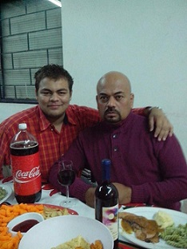
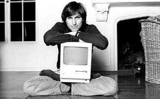

Bueno en este espacio quiero ser muy breve actualmente solo admiro a 3 personas a dos de ellas las conozco mas a 1 nunca tendré la suerte de conocerla, son personas que tienen un impacto en mi vida, son personas que me hacen ser mejor persona que me dieron lecciones de vida y gracias a ellas hoy soy la persona que soy.
Bueno en primer lugar tengo a mi abuela, también mencionada por mi como mamanina ella no fue la mujer que me dio la vida pero es la persona que me a cuidado desde que nací, me ha visto pasar por mis peores y mejores momentos. Me ha llenado de consejos, me ha cuidado siempre estaré agradecido con ella como nadie tiene una idea yo la considero como mi madre y ella como su hijo, siempre estaré para ella en cualquier momento y se que ella estará ahí para mi, me dio consejos , me ayuda y me cuida en todas mis enfermedades pero lo mas importante, adoro las historias que ella me cuenta sobre como eran las cosas en sus tiempos, como se vestían como eran sus padres ya que ella es de descendencia china, sus padres vivieron en cantón china, es sorprendente su cultura. Algun día espero viajar junto a ella y conocer dicho lugar

La segunda persona que admiro es a mi papa el es un ingeniero industrial eléctrico, el fue la razón que me motivo a ser ingeniero, estudiar y seguir adelante, siempre esta ahí en mis momentos difíciles y me aconseja para que mejore, cuando ocupo ayuda en alguna materia o algún consejo el me ayuda, es una persona muy fuerte emocionalmente el me crió en mis momentos difíciles cuando no quería estudiar, el hizo que estudiara y me superara. Fue el motivo de que pudiera terminar la secundaria, si me hubiese quedado con mi madre, quien sabe que seria de mi tal vez fuera otro vagabundo mas o no se, vivía en un mundo donde no tenia preocupaciones ni me importaba nada.

Y por ultimo Steve Jobs una persona importante, saber que sin terminar la universidad logro grandes cosas, pero para mi lo que mas me causo impacto es que el se enfocaba en que las cosas siempre se miraran bien, todo tenia que estar bien hecho, por que si las cosas no se hacen bien no sirven, saber que fue una persona millonaria con una mansión que solo tenia una Macintosh y una cama fue algo gracioso, pero lo mas impresionante es cuando lo despidieron de la propia empresa que el habia creado, hizo otra y después regreso a trabajar con Apple ganando poco menos de 10 dolares solo para que cubrieran su seguro. El me enseño a seguir mis metas y mis sueños. Saber que si las cosas no se hacen por pasión no llegaras a ningún lado